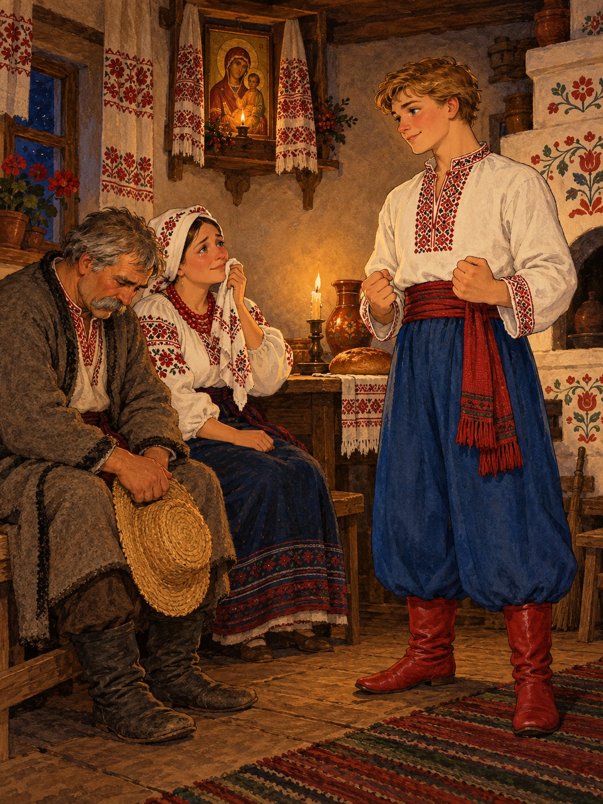

Якось Котигорошко спитав батьків:
— Чи були в мене брати або сестра?
Мати заплакала, а батько довго мовчав. Потім розповів синові, як пропала донька, як шестеро синів пішли її шукати і не повернулися.
Котигорошко вислухав і підвівся з лави:
— Піду я їх визволяти.
Батьки відмовляли його, просили лишитися, та син стояв на своєму.
